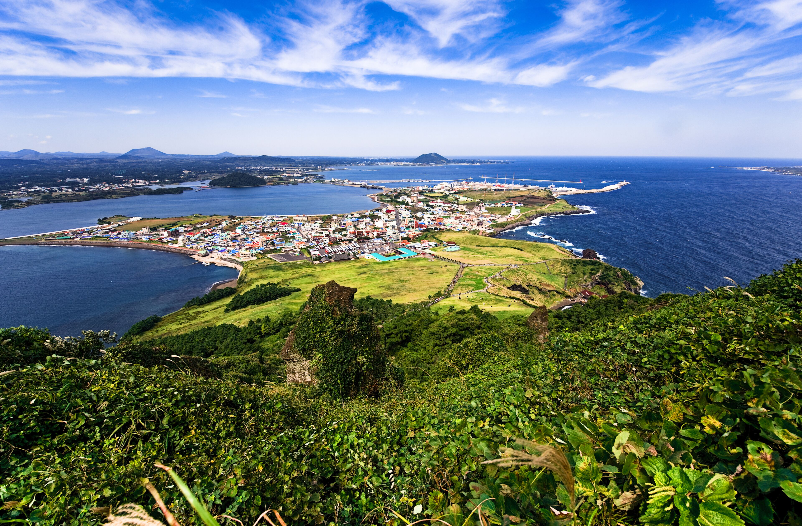

Bali
Paisagens tropicais, templos e tradições culturais.
DESCUBRA O CONTINENTE ASIÁTICO
Uma jornada por paisagens extraordinárias, culturas fascinantes e destinos inesquecíveis.
Conheça os destinosSOBRE O TOURÁSIA
Do contato com a natureza à riqueza das tradições culturais, cada destino revela experiências e paisagens únicas.
O Tourásia reúne informações sobre cinco destinos turísticos para apresentar suas características, atrações e particularidades.
NOSSOS DESTINOS
Paisagens tropicais, templos e tradições culturais.

Águas esmeraldas, ilhas calcárias e paisagens impressionantes.

Templos históricos, jardins tradicionais e arquitetura japonesa.

Paisagens vulcânicas, praias e formações naturais únicas.

Montanhas monumentais, pilares rochosos e cenários naturais extraordinários.